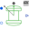
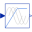
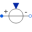
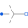
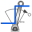

SMPM_InverterTest example: PermanentMagnetSynchronousInductionMachine with inverter |
|
Diagram
{kind=link}
Information
This information is part of the Modelica Standard Library maintained by the Modelica Association.
An ideal frequency inverter is modeled by using a VfController and a three-phase SignalVoltage. Frequency is raised by a ramp, causing the permanent magnet synchronous induction machine to start, and accelerating inertias. At time tStep a load step is applied.
Simulate for 1.5 seconds and plot (versus time):
- currentQuasiRMSSensor.I: stator current RMS
- smpm.wMechanical: motor's speed
- smpm.tauElectrical: motor's torque
- rotorDisplacementAngle.rotorDisplacementAngle: rotor displacement angle
Default machine parameters are used.
In practice it is nearly impossible to drive a PMSMD without current controller.
Parameters (8)
| VNominal |
Value: 100 Type: Voltage (V) Description: Nominal RMS voltage per phase |
|---|---|
| fNominal |
Value: 50 Type: Frequency (Hz) Description: Nominal frequency |
| f |
Value: 50 Type: Frequency (Hz) Description: Actual frequency |
| tRamp |
Value: 1 Type: Time (s) Description: Frequency ramp |
| TLoad |
Value: 181.4 Type: Torque (N·m) Description: Nominal load torque |
| tStep |
Value: 1.2 Type: Time (s) Description: Time of load torque step |
| JLoad |
Value: 0.29 Type: Inertia (kg·m²) Description: Load's moment of inertia |
| smpmData |
Value: Type: SM_PermanentMagnetData |
Components (12)
| smpm |
Type: SM_PermanentMagnet |
|
|---|---|---|
| currentQuasiRMSSensor |
Type: CurrentQuasiRMSSensor |
|
|  | rotorDisplacementAngle |
Type: RotorDisplacementAngle |
| ramp |
Type: Ramp |
|
|  | vfController |
Type: VfController |
|  | signalVoltage |
Type: SignalVoltage |
|  | star |
Type: Star |
| ground |
Type: Ground |
|
| loadInertia |
Type: Inertia |
|
|  | loadTorqueStep |
Type: TorqueStep |
| terminalBox |
Type: TerminalBox |
|
| smpmData |
Type: SM_PermanentMagnetData |